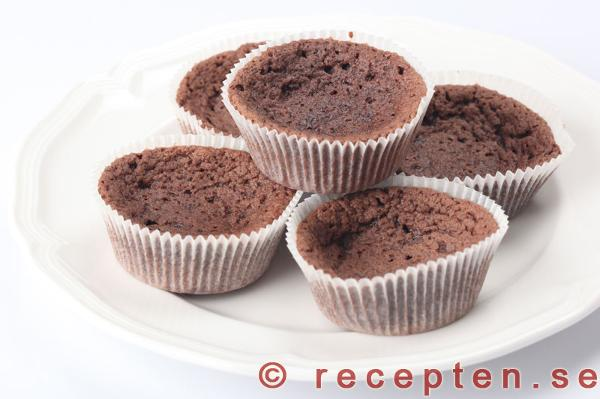
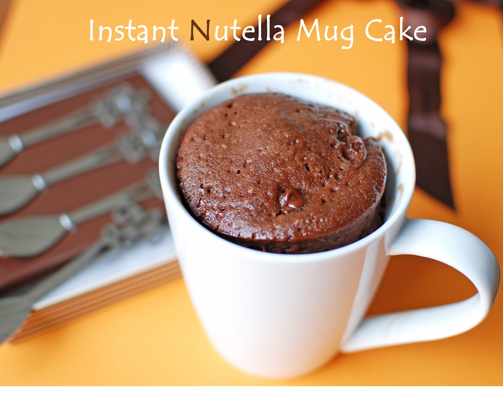
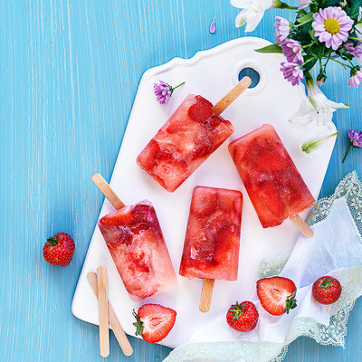

RECEPT PÅ OLIKA RÄTTER:
kladdkakemuffins

INGREDIENSER:
- 2ägg
- 3dl socker
- 2dl mjöl
- 150g smält smör
- 6msk cacao
- 2tsk vaniljsocker
- 1krm salt
ARBETSGÅNG:
Sätt ugnen på 200 grader och smält allt smör.
Ta en melan stor bunke och häl i sockret, äggen och vispa tills du tycker det är klart.
Om du tyvker det är klart så häller du alla torra varor i en annan bunke och tar en ny visp eller sked och vispar tills allt är blandat.
Häll i lite i taget till den stora bunken, och om det blir svårt att blanda så kan du hälla i smöret. För du ska ändå hälla i smöret.
Häll sedan smeten i muffinsformar och sätt in dem i ungnen ca 13 minuter, och det skal bara vara kladdigt i mitten om det är det då vet man att de är klara:)
MUG CAKE: NUTELLA SOM EN FONDANT:

INGREDIENSER
- 1cm tjock skiva smör (30g)
- 3msk Nutella
- 1ägg
- 3msk socker
- 4msk vetemjöl
- ½tsk bakpulver
FYLNING:
- 1tsk Nutella
I EN MUG:
Låt smöret smälta tillsammans med Nutella 30 sekunder i mikron(800 watt).
Vispa tills smöret och nutellakrämen blandats ordentligt och låt blandningen svalna något.
Vispa sedan successivt ner ägg, socker, vetemjöl och bakpulver.
Tillaga 40 sekunder i mikron(800 watt).
Tillsätt fyllningen av nutella och tillaga ytterligare 40 sekunder(800 watt).
Låt stå och svalna i 1 minut innan servering
